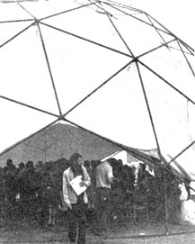
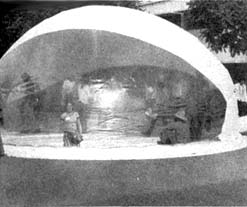
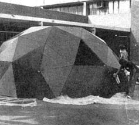

Focus
Wester attends the Focus: Shelters For Mankind Conference and met designers and builders who are working with the future of mankind, the environment and the planet.
By Cass Wester
November/December 1972
Three and one half hours out of Cleveland on a United jet, I simultaneously kissed the sun goodnight and the moon hello . . . and dropped through the smog to land in Los Angeles. I was on my way - with a couple boxes of MOTHER in hand - to attend the FOCUS: SHELTERS FOR MANKIND Conference at California State University from September 22 to 24.
A constant flow of students, designers and interested folks made their way to the FOCUS 50-foot-diameter, white, geodesic dome to register during the three-day event. That hemispheric registration building should have been a tip-off, though, because - almost from the beginning of the conference - it was apparent that the gathering's FOCUS was on domes. Now there's nothing primarily wrong with such structures . . . but we certainly limit the scope of any discussion about shelters for mankind when we restrict our attention almost entirely to geodesics.
It was already a relief, then, to attend Bob Easton's slide show on opening day. Bob-co-author, as you may know, of DOMEBOOKS I and II - is an independent builder whose one-time burning interest in domes seems to be rapidly turning into a profound respect for more conventional fabrication approaches. During his show, Bob emphasized his developing interest in natural construction materials chosen and used "with respect to the supply on hand and what we are humanly capable of replacing". Later during the conference, Easton told me about his work with adobe bricks and promised that he'll keep us informed about this, his latest project.
At another point in the conference, Lloyd Kahn - the second half of the team who wrote DOMEBOOKS I and II - inspired lively debates and spirited exchanges with his audience when, if anything, he carried Easton's new line of thought even further. Kahn, whose name is almost synonymous with domes, has been reevaluating the structures over the years and now envisions their use mainly as auditoriums and galleries. More power to him.
Lloyd's public announcement of his expanding interest in natural materials and traditional building designs fabricated with human hands left many of his old followers bewildered . . . but Kahn's presentation fit the theme of SHELTERS FOR MANKIND better, possibly, than the remarks presented by any other speaker at the conference.
One other really noteworthy contrast to the dome thinking in which FOCUS was steeped was the speech by Paolo Soleri. Soleri, of course, is the slight Italian designer who dreams such monumental visions of what the future cities of the world might be. Whether or not you agree with Solerie's megastructure and arcology philosophy, you have to be impressed by his Cosanti Foundation in Scottsdale, Arizona where he practices his theories.
With films, slides and a rap session, Soleri gave his audience a clear picture of his monster cities - populations ranging from 3,000 to 100,000 - in the desert. When MOTHER asked him about the possible effect of a natural catastrophe, like an earthquake, on one or the projected mile-high communities, however, Soled replied that he didn't know . . . but he suspected that the place would probably become one monstrous memorial.
The rest of the conference was mostly domes, domes, domes. The structures were there in many sizes and many patterns, including a 25-foot polyvinyl chloride pneumatic model designed by Chrysalis, a France-based group of architects. When the majority of the gathering's attenders weren't putting up domes, they spent hours talking about them . . . or watching Buckminster Fuller films about domes.
On the last afternoon of the conference, a large crowd gathered in the campus parking lot to watch research scientist Allen Davidson demonstrate the fireproof qualities of his 20-foot polyurethane foam geodesic dome (coated with flame-retardant resin). Allen enclosed himself within the building and remained inside during the fire. Fire? Yes, fire . . . the dome was supposed to self-extinguish but it didn't, and the TV cameramen and newspaper reporters had their headline feature story for the day. Davidson got out safely, however, and the blaze was squelched with fire extinguishers.
If the main subject (structures) of the conference was weighed heavily in favor of one particular design, some of the supporting displays and speakers helped put the gathering into somewhat better perspective. EARTHMIND (a California research group), for instance, demonstrated a small working methane generator built out of recycled materials for the grand total cost of $47.00.
Another most versatile and worthwhile group - represented at the conference by Jerome Weingart and Patti Horne - is the Environmental Quality Lab in Los Angeles. The organization is made up of scientists, economists, engineers, anthropologists, sociologists and artists who are attempting to identify strategic options for dealing with energy/environment problems. They're well informed, know what they're doing and - with the aid of grants - are working on solar energy systems and other amazing projects. Weingart and Horne, acting as a team, showed some highly educational films on solar energy and strip mining that, alone, made their lecture worthwhile! We'll definitely be telling you more about EQL in the future.
The presentation made by Les Cohen, Captain Jacques Cousteau's political/marketing advisor, was also quite interesting and opened up another channel of communication between MOTHER and some likeminded kinfolk. You'll be hearing more about that soon, too.
All in all, I have to thank Janek Kaliczak (one of the conference coordinators and dome enthusiasts) for his help and guidance during the meeting. Although the FOCUS gathering fell dramatically short of its lofty title, Janek introduced me to some designers and builders who are - we hope -working with the future of mankind, the environment and the planet always uppermost in mind.
|
 |
 |
 |
|
 |
|
|